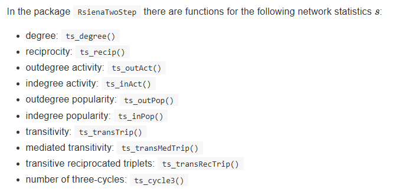

In the workshop we did the following:
Student presentations on first ideas RQs and literature
Ashwin presentation on his data
Started figuring out some descriptive statistics
Update my RQs and prepare presentation for next time
Start writing introduction
Think about data
Read chapter 6 (and scan 8) of SNASS
Continue figuring out the descriptives
Update lab journal and website
# install.packages("RSiena")
# install.packages("igraph")
# install.packages("styler")
# install.packages("network")
library(RSiena)## Warning: package 'RSiena' was built under R version 4.5.3library(igraph)## Warning: package 'igraph' was built under R version 4.5.3##
## Attaching package: 'igraph'## The following objects are masked from 'package:stats':
##
## decompose, spectrum## The following object is masked from 'package:base':
##
## unionlibrary(network)## Warning: package 'network' was built under R version 4.5.3##
## 'network' 1.20.0 (2026-02-06), part of the Statnet Project
## * 'news(package="network")' for changes since last version
## * 'citation("network")' for citation information
## * 'https://statnet.org' for help, support, and other information##
## Attaching package: 'network'## The following objects are masked from 'package:igraph':
##
## %c%, %s%, add.edges, add.vertices, delete.edges, delete.vertices,
## get.edge.attribute, get.edges, get.vertex.attribute, is.bipartite,
## is.directed, list.edge.attributes, list.vertex.attributes,
## set.edge.attribute, set.vertex.attributeMore info here: https://rpubs.com/bunnificent/862631
# the data
s501## V1 V2 V3 V4 V5 V6 V7 V8 V9 V10 V11 V12 V13 V14 V15 V16 V17 V18 V19 V20 V21
## 1 0 0 0 0 0 0 0 0 0 0 1 0 0 1 0 0 0 0 0 0 0
## 2 0 0 0 0 0 0 1 0 0 0 1 0 0 0 0 0 0 0 0 0 0
## 3 0 0 0 1 0 0 0 0 1 0 0 0 0 0 0 0 0 0 0 0 0
## 4 0 0 1 0 0 0 0 0 1 0 0 0 0 0 0 0 0 0 0 0 0
## 5 0 0 0 0 0 0 0 0 0 0 0 0 0 0 0 0 0 0 0 0 0
## 6 0 0 0 0 0 0 0 1 0 0 0 0 0 0 0 0 0 0 0 0 0
## 7 0 1 0 0 0 0 0 0 0 0 0 0 0 0 0 0 0 0 0 0 0
## 8 0 0 0 0 0 1 0 0 0 0 0 0 0 0 0 0 0 0 0 0 0
## 9 0 0 1 1 0 0 0 0 0 0 0 0 0 0 0 0 0 0 0 0 0
## 10 0 0 0 0 0 0 0 0 0 0 1 0 0 0 1 0 0 0 0 0 0
## 11 0 1 0 0 0 0 0 0 0 0 0 0 0 0 1 1 0 0 0 0 0
## 12 0 0 0 0 0 0 1 0 0 0 0 0 0 0 0 0 0 0 0 0 0
## 13 0 0 0 0 0 0 0 0 0 0 0 0 0 0 0 0 0 0 0 0 0
## 14 1 0 0 0 0 0 0 0 0 1 1 0 0 0 0 0 0 0 0 0 0
## 15 0 0 0 0 0 0 0 0 0 1 1 0 0 0 0 1 0 0 0 0 0
## 16 0 0 0 0 0 0 0 0 0 0 1 0 0 0 1 0 0 0 0 0 0
## 17 0 0 0 0 0 0 0 0 0 0 0 0 0 0 0 0 0 1 1 0 1
## 18 0 0 0 0 0 0 0 0 0 0 0 0 0 0 0 0 0 0 1 0 0
## 19 0 0 0 0 0 0 0 0 0 0 1 0 0 0 0 0 0 0 0 0 0
## 20 0 0 0 0 0 0 0 0 0 0 0 0 0 0 0 0 0 0 0 0 0
## 21 0 0 0 0 0 0 0 0 0 0 0 0 0 0 0 0 0 0 0 0 0
## 22 0 0 0 0 0 0 0 0 0 0 0 0 0 0 0 0 1 0 0 0 1
## 23 0 0 0 0 0 0 0 0 0 0 0 0 0 0 0 0 0 0 0 0 0
## 24 0 0 0 0 0 0 0 0 0 0 0 0 0 0 0 0 1 0 1 0 1
## 25 0 0 0 0 0 0 0 0 0 0 0 0 0 0 0 0 0 0 0 0 0
## 26 0 0 0 0 0 0 1 0 0 0 0 0 0 0 0 0 0 0 0 0 0
## 27 0 0 0 0 0 0 0 0 0 0 0 0 0 0 0 0 0 0 0 0 0
## 28 0 0 0 0 0 0 0 0 0 0 0 0 0 0 0 0 0 0 0 0 0
## 29 0 0 0 0 0 0 0 0 0 0 0 0 0 0 0 0 0 0 0 0 0
## 30 0 0 0 0 0 0 0 0 0 0 1 0 0 0 0 0 0 0 0 0 0
## 31 0 0 0 0 0 0 0 0 0 0 0 0 0 0 0 0 0 0 0 0 1
## 32 0 0 0 0 1 0 0 0 0 0 0 0 0 0 0 0 0 0 0 0 1
## 33 0 0 0 0 0 0 0 0 0 1 0 0 0 0 0 0 0 0 0 0 0
## 34 0 0 0 0 0 0 0 0 0 0 0 0 0 0 0 0 0 0 0 0 0
## 35 0 0 0 0 0 0 0 0 0 0 0 0 0 0 0 0 0 1 0 0 0
## 36 0 0 0 0 0 0 0 0 0 0 0 0 0 0 0 0 0 0 0 0 0
## 37 0 0 0 0 0 0 0 0 0 0 0 0 0 0 0 0 0 0 0 0 0
## 38 0 0 0 0 0 0 0 0 0 0 0 0 0 0 0 0 0 0 0 0 0
## 39 0 0 0 0 0 0 0 0 0 0 0 0 0 0 0 0 0 0 0 0 0
## 40 0 0 0 0 0 0 0 0 0 0 0 0 0 0 0 0 0 0 0 0 0
## 41 0 0 0 0 0 0 0 0 0 0 0 0 0 0 0 0 0 0 0 0 0
## 42 0 0 0 0 0 0 1 0 0 0 0 0 0 0 0 0 0 0 0 0 0
## 43 0 0 0 0 0 0 0 0 0 0 0 0 0 0 0 0 0 0 0 0 0
## 44 0 0 0 0 0 0 1 0 0 0 0 0 0 0 0 0 0 0 0 0 0
## 45 0 0 0 0 0 0 0 0 0 0 0 0 0 0 0 0 0 0 0 0 0
## 46 0 0 0 0 0 0 0 0 0 0 0 0 0 0 0 0 0 0 0 0 0
## 47 0 0 0 0 0 0 0 0 0 0 0 0 0 0 0 0 0 0 0 0 0
## 48 0 0 0 0 0 0 0 0 0 0 0 0 0 0 0 0 0 0 0 0 0
## 49 0 0 0 0 0 0 0 0 0 0 0 0 0 0 0 0 0 0 0 0 0
## 50 0 0 0 0 0 0 0 0 0 0 0 0 0 0 0 0 0 0 0 0 0
## V22 V23 V24 V25 V26 V27 V28 V29 V30 V31 V32 V33 V34 V35 V36 V37 V38 V39 V40
## 1 0 0 0 0 0 0 0 0 0 0 0 0 0 0 0 0 0 0 0
## 2 0 0 0 0 0 0 0 0 0 0 0 0 0 0 0 0 0 0 0
## 3 0 0 0 0 0 0 0 0 0 0 0 0 0 0 0 0 0 0 0
## 4 0 0 0 0 0 0 0 0 0 0 0 0 0 0 0 0 0 0 0
## 5 0 0 0 0 0 0 0 0 0 0 1 0 0 0 0 0 0 0 0
## 6 0 0 0 0 0 0 0 0 0 0 0 0 0 0 0 0 0 0 0
## 7 0 0 0 0 0 0 0 0 0 0 0 0 0 0 0 0 0 0 0
## 8 0 0 0 0 0 0 0 0 0 0 0 0 0 0 0 0 0 0 0
## 9 0 0 0 0 0 0 0 0 0 0 0 0 0 0 0 0 0 0 0
## 10 0 0 0 0 0 0 0 0 0 0 0 1 0 0 0 0 0 0 0
## 11 0 0 0 0 0 0 0 0 0 0 0 0 0 0 0 0 0 0 0
## 12 0 0 0 0 0 0 0 0 0 0 0 0 0 0 0 0 0 0 0
## 13 0 0 0 0 0 0 0 0 0 0 0 0 0 0 0 0 0 0 0
## 14 0 0 0 0 0 0 0 0 0 0 0 0 0 0 0 0 0 0 0
## 15 0 0 0 0 0 0 0 0 0 0 0 0 0 0 0 0 0 0 0
## 16 0 0 0 0 0 0 0 0 0 0 0 0 0 0 0 0 0 0 0
## 17 1 0 1 0 0 0 0 0 0 0 0 0 0 0 0 0 0 0 0
## 18 0 0 0 0 0 0 0 0 0 0 0 0 0 1 0 0 0 0 0
## 19 0 0 1 0 1 0 0 0 1 0 0 0 0 0 0 0 0 0 0
## 20 0 0 0 0 0 0 0 0 0 0 0 0 0 0 0 0 0 0 0
## 21 1 0 0 0 0 0 0 0 0 0 0 0 0 0 0 0 0 0 0
## 22 0 0 0 0 0 0 0 0 0 1 0 0 1 0 0 0 0 0 0
## 23 0 0 1 0 0 0 0 0 0 0 0 0 0 0 0 0 0 0 0
## 24 1 1 0 0 0 0 0 0 0 0 0 0 0 0 0 0 0 0 0
## 25 1 0 0 0 0 0 0 0 0 1 1 0 0 0 0 0 0 0 0
## 26 0 0 0 0 0 0 0 1 0 0 0 0 0 0 0 0 0 0 0
## 27 0 0 0 0 0 0 1 1 1 0 0 0 0 0 0 0 0 0 0
## 28 0 0 0 0 0 1 0 0 0 0 0 0 0 0 0 0 0 0 0
## 29 0 0 0 0 1 0 0 0 1 0 0 1 0 0 0 0 0 0 0
## 30 0 0 0 0 1 0 0 1 0 0 0 1 0 0 0 0 0 0 0
## 31 0 0 0 1 0 0 0 0 0 0 1 0 0 0 0 0 0 0 0
## 32 0 0 0 0 0 0 0 0 0 1 0 0 0 0 0 1 0 0 0
## 33 0 0 0 0 0 0 0 0 1 0 0 0 0 0 0 0 0 0 0
## 34 0 0 0 0 0 0 0 0 0 1 0 0 0 0 0 1 0 0 0
## 35 0 0 0 0 0 0 0 0 0 0 0 0 0 0 0 0 0 0 0
## 36 0 0 0 0 0 0 0 0 0 0 0 0 0 0 0 0 1 0 0
## 37 0 0 0 0 0 0 0 0 0 1 1 0 1 0 0 0 0 0 0
## 38 0 0 0 0 0 0 0 0 0 0 0 0 0 0 1 0 0 0 0
## 39 0 0 0 0 0 0 0 0 0 0 0 0 0 0 0 0 0 0 0
## 40 0 0 0 0 0 0 0 0 0 0 0 0 0 0 0 0 0 0 0
## 41 0 0 0 0 0 0 0 0 0 0 0 0 0 0 1 0 1 0 0
## 42 0 0 0 0 0 0 0 0 0 0 0 0 0 0 0 0 0 0 0
## 43 1 0 0 0 0 0 0 0 0 0 0 0 0 0 0 0 0 1 0
## 44 0 0 0 0 0 0 0 0 0 0 0 0 0 0 0 0 0 0 0
## 45 0 0 0 0 0 0 0 0 0 0 0 0 0 0 0 0 0 0 1
## 46 0 0 0 0 0 0 0 0 0 0 0 0 0 0 0 0 0 0 1
## 47 0 0 0 0 0 0 0 0 0 0 0 0 0 0 0 0 0 0 0
## 48 0 0 0 0 0 0 0 0 0 0 0 0 0 0 0 0 0 0 0
## 49 0 0 0 0 0 0 0 0 0 0 0 0 0 0 0 0 0 0 0
## 50 0 0 0 0 0 0 0 0 0 0 0 0 0 0 0 0 0 0 0
## V41 V42 V43 V44 V45 V46 V47 V48 V49 V50
## 1 0 0 0 0 0 0 0 0 0 0
## 2 0 0 0 0 0 0 0 0 0 0
## 3 0 0 0 0 0 0 0 0 0 0
## 4 0 0 0 0 0 0 0 0 0 0
## 5 0 0 0 0 0 0 0 0 0 0
## 6 0 0 0 0 0 0 0 0 0 0
## 7 0 1 0 1 0 0 0 0 0 0
## 8 0 0 0 0 0 0 0 0 0 0
## 9 0 0 0 0 0 0 0 0 0 0
## 10 0 0 0 0 0 0 0 0 0 0
## 11 0 0 0 0 0 0 0 0 0 0
## 12 0 1 0 1 0 0 0 0 0 0
## 13 0 0 0 0 0 0 0 0 0 0
## 14 0 0 0 0 0 0 0 0 0 0
## 15 0 0 0 0 0 0 0 0 0 0
## 16 0 0 0 0 0 0 0 0 0 0
## 17 0 0 0 0 0 0 0 0 0 0
## 18 0 0 0 0 0 0 0 0 0 0
## 19 0 0 0 0 0 0 0 0 0 0
## 20 0 0 0 0 0 0 0 0 0 0
## 21 0 0 0 0 0 0 0 0 0 0
## 22 0 0 0 0 0 0 0 0 0 0
## 23 0 0 0 0 0 0 0 0 0 0
## 24 0 0 0 0 0 0 0 0 0 0
## 25 0 0 0 0 0 0 0 0 0 0
## 26 0 0 0 1 0 0 0 0 0 0
## 27 0 0 0 0 0 0 0 0 0 0
## 28 0 0 0 0 0 0 0 0 0 0
## 29 0 0 0 0 0 0 0 0 0 0
## 30 0 0 0 0 0 0 0 0 0 0
## 31 0 0 0 0 0 0 0 0 0 0
## 32 0 0 0 0 0 0 0 0 0 0
## 33 0 0 0 0 0 0 0 0 0 0
## 34 0 0 0 0 0 0 0 0 0 0
## 35 0 0 0 0 0 0 0 0 0 0
## 36 1 0 0 0 0 0 0 0 0 0
## 37 0 0 0 0 0 0 0 0 0 0
## 38 1 0 0 0 0 0 0 0 0 0
## 39 0 0 1 0 0 0 0 0 0 0
## 40 0 0 0 0 1 1 1 0 0 0
## 41 0 0 0 0 0 0 0 0 0 0
## 42 0 0 0 1 0 0 0 0 0 0
## 43 0 0 0 0 0 0 0 0 0 0
## 44 0 1 0 0 0 0 0 0 0 0
## 45 0 0 0 0 0 1 1 0 0 0
## 46 0 0 0 0 1 0 0 0 1 0
## 47 0 0 0 0 0 0 0 0 0 0
## 48 0 0 0 0 0 1 0 0 1 0
## 49 0 0 0 0 0 1 0 1 0 0
## 50 0 0 0 0 0 0 0 0 0 0?s501## starting httpd help server ... donesummary(s501)## V1 V2 V3 V4 V5
## Min. :0.00 Min. :0.00 Min. :0.00 Min. :0.00 Min. :0.00
## 1st Qu.:0.00 1st Qu.:0.00 1st Qu.:0.00 1st Qu.:0.00 1st Qu.:0.00
## Median :0.00 Median :0.00 Median :0.00 Median :0.00 Median :0.00
## Mean :0.02 Mean :0.04 Mean :0.04 Mean :0.04 Mean :0.02
## 3rd Qu.:0.00 3rd Qu.:0.00 3rd Qu.:0.00 3rd Qu.:0.00 3rd Qu.:0.00
## Max. :1.00 Max. :1.00 Max. :1.00 Max. :1.00 Max. :1.00
## V6 V7 V8 V9 V10
## Min. :0.00 Min. :0.0 Min. :0.00 Min. :0.00 Min. :0.00
## 1st Qu.:0.00 1st Qu.:0.0 1st Qu.:0.00 1st Qu.:0.00 1st Qu.:0.00
## Median :0.00 Median :0.0 Median :0.00 Median :0.00 Median :0.00
## Mean :0.02 Mean :0.1 Mean :0.02 Mean :0.04 Mean :0.06
## 3rd Qu.:0.00 3rd Qu.:0.0 3rd Qu.:0.00 3rd Qu.:0.00 3rd Qu.:0.00
## Max. :1.00 Max. :1.0 Max. :1.00 Max. :1.00 Max. :1.00
## V11 V12 V13 V14 V15
## Min. :0.00 Min. :0 Min. :0 Min. :0.00 Min. :0.00
## 1st Qu.:0.00 1st Qu.:0 1st Qu.:0 1st Qu.:0.00 1st Qu.:0.00
## Median :0.00 Median :0 Median :0 Median :0.00 Median :0.00
## Mean :0.16 Mean :0 Mean :0 Mean :0.02 Mean :0.06
## 3rd Qu.:0.00 3rd Qu.:0 3rd Qu.:0 3rd Qu.:0.00 3rd Qu.:0.00
## Max. :1.00 Max. :0 Max. :0 Max. :1.00 Max. :1.00
## V16 V17 V18 V19 V20
## Min. :0.00 Min. :0.00 Min. :0.00 Min. :0.00 Min. :0
## 1st Qu.:0.00 1st Qu.:0.00 1st Qu.:0.00 1st Qu.:0.00 1st Qu.:0
## Median :0.00 Median :0.00 Median :0.00 Median :0.00 Median :0
## Mean :0.04 Mean :0.04 Mean :0.04 Mean :0.06 Mean :0
## 3rd Qu.:0.00 3rd Qu.:0.00 3rd Qu.:0.00 3rd Qu.:0.00 3rd Qu.:0
## Max. :1.00 Max. :1.00 Max. :1.00 Max. :1.00 Max. :0
## V21 V22 V23 V24 V25
## Min. :0.0 Min. :0.0 Min. :0.00 Min. :0.00 Min. :0.00
## 1st Qu.:0.0 1st Qu.:0.0 1st Qu.:0.00 1st Qu.:0.00 1st Qu.:0.00
## Median :0.0 Median :0.0 Median :0.00 Median :0.00 Median :0.00
## Mean :0.1 Mean :0.1 Mean :0.02 Mean :0.06 Mean :0.02
## 3rd Qu.:0.0 3rd Qu.:0.0 3rd Qu.:0.00 3rd Qu.:0.00 3rd Qu.:0.00
## Max. :1.0 Max. :1.0 Max. :1.00 Max. :1.00 Max. :1.00
## V26 V27 V28 V29 V30
## Min. :0.00 Min. :0.00 Min. :0.00 Min. :0.00 Min. :0.00
## 1st Qu.:0.00 1st Qu.:0.00 1st Qu.:0.00 1st Qu.:0.00 1st Qu.:0.00
## Median :0.00 Median :0.00 Median :0.00 Median :0.00 Median :0.00
## Mean :0.06 Mean :0.02 Mean :0.02 Mean :0.06 Mean :0.08
## 3rd Qu.:0.00 3rd Qu.:0.00 3rd Qu.:0.00 3rd Qu.:0.00 3rd Qu.:0.00
## Max. :1.00 Max. :1.00 Max. :1.00 Max. :1.00 Max. :1.00
## V31 V32 V33 V34 V35
## Min. :0.0 Min. :0.00 Min. :0.00 Min. :0.00 Min. :0.00
## 1st Qu.:0.0 1st Qu.:0.00 1st Qu.:0.00 1st Qu.:0.00 1st Qu.:0.00
## Median :0.0 Median :0.00 Median :0.00 Median :0.00 Median :0.00
## Mean :0.1 Mean :0.08 Mean :0.06 Mean :0.04 Mean :0.02
## 3rd Qu.:0.0 3rd Qu.:0.00 3rd Qu.:0.00 3rd Qu.:0.00 3rd Qu.:0.00
## Max. :1.0 Max. :1.00 Max. :1.00 Max. :1.00 Max. :1.00
## V36 V37 V38 V39 V40
## Min. :0.00 Min. :0.00 Min. :0.00 Min. :0.00 Min. :0.00
## 1st Qu.:0.00 1st Qu.:0.00 1st Qu.:0.00 1st Qu.:0.00 1st Qu.:0.00
## Median :0.00 Median :0.00 Median :0.00 Median :0.00 Median :0.00
## Mean :0.04 Mean :0.04 Mean :0.04 Mean :0.02 Mean :0.04
## 3rd Qu.:0.00 3rd Qu.:0.00 3rd Qu.:0.00 3rd Qu.:0.00 3rd Qu.:0.00
## Max. :1.00 Max. :1.00 Max. :1.00 Max. :1.00 Max. :1.00
## V41 V42 V43 V44 V45
## Min. :0.00 Min. :0.00 Min. :0.00 Min. :0.00 Min. :0.00
## 1st Qu.:0.00 1st Qu.:0.00 1st Qu.:0.00 1st Qu.:0.00 1st Qu.:0.00
## Median :0.00 Median :0.00 Median :0.00 Median :0.00 Median :0.00
## Mean :0.04 Mean :0.06 Mean :0.02 Mean :0.08 Mean :0.04
## 3rd Qu.:0.00 3rd Qu.:0.00 3rd Qu.:0.00 3rd Qu.:0.00 3rd Qu.:0.00
## Max. :1.00 Max. :1.00 Max. :1.00 Max. :1.00 Max. :1.00
## V46 V47 V48 V49 V50
## Min. :0.00 Min. :0.00 Min. :0.00 Min. :0.00 Min. :0
## 1st Qu.:0.00 1st Qu.:0.00 1st Qu.:0.00 1st Qu.:0.00 1st Qu.:0
## Median :0.00 Median :0.00 Median :0.00 Median :0.00 Median :0
## Mean :0.08 Mean :0.04 Mean :0.02 Mean :0.04 Mean :0
## 3rd Qu.:0.00 3rd Qu.:0.00 3rd Qu.:0.00 3rd Qu.:0.00 3rd Qu.:0
## Max. :1.00 Max. :1.00 Max. :1.00 Max. :1.00 Max. :0str(s501)## int [1:50, 1:50] 0 0 0 0 0 0 0 0 0 0 ...
## - attr(*, "dimnames")=List of 2
## ..$ : chr [1:50] "1" "2" "3" "4" ...
## ..$ : chr [1:50] "V1" "V2" "V3" "V4" ...attributes(s501)## $dim
## [1] 50 50
##
## $dimnames
## $dimnames[[1]]
## [1] "1" "2" "3" "4" "5" "6" "7" "8" "9" "10" "11" "12" "13" "14" "15"
## [16] "16" "17" "18" "19" "20" "21" "22" "23" "24" "25" "26" "27" "28" "29" "30"
## [31] "31" "32" "33" "34" "35" "36" "37" "38" "39" "40" "41" "42" "43" "44" "45"
## [46] "46" "47" "48" "49" "50"
##
## $dimnames[[2]]
## [1] "V1" "V2" "V3" "V4" "V5" "V6" "V7" "V8" "V9" "V10" "V11" "V12"
## [13] "V13" "V14" "V15" "V16" "V17" "V18" "V19" "V20" "V21" "V22" "V23" "V24"
## [25] "V25" "V26" "V27" "V28" "V29" "V30" "V31" "V32" "V33" "V34" "V35" "V36"
## [37] "V37" "V38" "V39" "V40" "V41" "V42" "V43" "V44" "V45" "V46" "V47" "V48"
## [49] "V49" "V50"rm(list = ls())
network(s501)## Network attributes:
## vertices = 50
## directed = TRUE
## hyper = FALSE
## loops = FALSE
## multiple = FALSE
## bipartite = FALSE
## total edges= 113
## missing edges= 0
## non-missing edges= 113
##
## Vertex attribute names:
## vertex.names
##
## No edge attributes summary(s501,
print.adj = TRUE
)## V1 V2 V3 V4 V5
## Min. :0.00 Min. :0.00 Min. :0.00 Min. :0.00 Min. :0.00
## 1st Qu.:0.00 1st Qu.:0.00 1st Qu.:0.00 1st Qu.:0.00 1st Qu.:0.00
## Median :0.00 Median :0.00 Median :0.00 Median :0.00 Median :0.00
## Mean :0.02 Mean :0.04 Mean :0.04 Mean :0.04 Mean :0.02
## 3rd Qu.:0.00 3rd Qu.:0.00 3rd Qu.:0.00 3rd Qu.:0.00 3rd Qu.:0.00
## Max. :1.00 Max. :1.00 Max. :1.00 Max. :1.00 Max. :1.00
## V6 V7 V8 V9 V10
## Min. :0.00 Min. :0.0 Min. :0.00 Min. :0.00 Min. :0.00
## 1st Qu.:0.00 1st Qu.:0.0 1st Qu.:0.00 1st Qu.:0.00 1st Qu.:0.00
## Median :0.00 Median :0.0 Median :0.00 Median :0.00 Median :0.00
## Mean :0.02 Mean :0.1 Mean :0.02 Mean :0.04 Mean :0.06
## 3rd Qu.:0.00 3rd Qu.:0.0 3rd Qu.:0.00 3rd Qu.:0.00 3rd Qu.:0.00
## Max. :1.00 Max. :1.0 Max. :1.00 Max. :1.00 Max. :1.00
## V11 V12 V13 V14 V15
## Min. :0.00 Min. :0 Min. :0 Min. :0.00 Min. :0.00
## 1st Qu.:0.00 1st Qu.:0 1st Qu.:0 1st Qu.:0.00 1st Qu.:0.00
## Median :0.00 Median :0 Median :0 Median :0.00 Median :0.00
## Mean :0.16 Mean :0 Mean :0 Mean :0.02 Mean :0.06
## 3rd Qu.:0.00 3rd Qu.:0 3rd Qu.:0 3rd Qu.:0.00 3rd Qu.:0.00
## Max. :1.00 Max. :0 Max. :0 Max. :1.00 Max. :1.00
## V16 V17 V18 V19 V20
## Min. :0.00 Min. :0.00 Min. :0.00 Min. :0.00 Min. :0
## 1st Qu.:0.00 1st Qu.:0.00 1st Qu.:0.00 1st Qu.:0.00 1st Qu.:0
## Median :0.00 Median :0.00 Median :0.00 Median :0.00 Median :0
## Mean :0.04 Mean :0.04 Mean :0.04 Mean :0.06 Mean :0
## 3rd Qu.:0.00 3rd Qu.:0.00 3rd Qu.:0.00 3rd Qu.:0.00 3rd Qu.:0
## Max. :1.00 Max. :1.00 Max. :1.00 Max. :1.00 Max. :0
## V21 V22 V23 V24 V25
## Min. :0.0 Min. :0.0 Min. :0.00 Min. :0.00 Min. :0.00
## 1st Qu.:0.0 1st Qu.:0.0 1st Qu.:0.00 1st Qu.:0.00 1st Qu.:0.00
## Median :0.0 Median :0.0 Median :0.00 Median :0.00 Median :0.00
## Mean :0.1 Mean :0.1 Mean :0.02 Mean :0.06 Mean :0.02
## 3rd Qu.:0.0 3rd Qu.:0.0 3rd Qu.:0.00 3rd Qu.:0.00 3rd Qu.:0.00
## Max. :1.0 Max. :1.0 Max. :1.00 Max. :1.00 Max. :1.00
## V26 V27 V28 V29 V30
## Min. :0.00 Min. :0.00 Min. :0.00 Min. :0.00 Min. :0.00
## 1st Qu.:0.00 1st Qu.:0.00 1st Qu.:0.00 1st Qu.:0.00 1st Qu.:0.00
## Median :0.00 Median :0.00 Median :0.00 Median :0.00 Median :0.00
## Mean :0.06 Mean :0.02 Mean :0.02 Mean :0.06 Mean :0.08
## 3rd Qu.:0.00 3rd Qu.:0.00 3rd Qu.:0.00 3rd Qu.:0.00 3rd Qu.:0.00
## Max. :1.00 Max. :1.00 Max. :1.00 Max. :1.00 Max. :1.00
## V31 V32 V33 V34 V35
## Min. :0.0 Min. :0.00 Min. :0.00 Min. :0.00 Min. :0.00
## 1st Qu.:0.0 1st Qu.:0.00 1st Qu.:0.00 1st Qu.:0.00 1st Qu.:0.00
## Median :0.0 Median :0.00 Median :0.00 Median :0.00 Median :0.00
## Mean :0.1 Mean :0.08 Mean :0.06 Mean :0.04 Mean :0.02
## 3rd Qu.:0.0 3rd Qu.:0.00 3rd Qu.:0.00 3rd Qu.:0.00 3rd Qu.:0.00
## Max. :1.0 Max. :1.00 Max. :1.00 Max. :1.00 Max. :1.00
## V36 V37 V38 V39 V40
## Min. :0.00 Min. :0.00 Min. :0.00 Min. :0.00 Min. :0.00
## 1st Qu.:0.00 1st Qu.:0.00 1st Qu.:0.00 1st Qu.:0.00 1st Qu.:0.00
## Median :0.00 Median :0.00 Median :0.00 Median :0.00 Median :0.00
## Mean :0.04 Mean :0.04 Mean :0.04 Mean :0.02 Mean :0.04
## 3rd Qu.:0.00 3rd Qu.:0.00 3rd Qu.:0.00 3rd Qu.:0.00 3rd Qu.:0.00
## Max. :1.00 Max. :1.00 Max. :1.00 Max. :1.00 Max. :1.00
## V41 V42 V43 V44 V45
## Min. :0.00 Min. :0.00 Min. :0.00 Min. :0.00 Min. :0.00
## 1st Qu.:0.00 1st Qu.:0.00 1st Qu.:0.00 1st Qu.:0.00 1st Qu.:0.00
## Median :0.00 Median :0.00 Median :0.00 Median :0.00 Median :0.00
## Mean :0.04 Mean :0.06 Mean :0.02 Mean :0.08 Mean :0.04
## 3rd Qu.:0.00 3rd Qu.:0.00 3rd Qu.:0.00 3rd Qu.:0.00 3rd Qu.:0.00
## Max. :1.00 Max. :1.00 Max. :1.00 Max. :1.00 Max. :1.00
## V46 V47 V48 V49 V50
## Min. :0.00 Min. :0.00 Min. :0.00 Min. :0.00 Min. :0
## 1st Qu.:0.00 1st Qu.:0.00 1st Qu.:0.00 1st Qu.:0.00 1st Qu.:0
## Median :0.00 Median :0.00 Median :0.00 Median :0.00 Median :0
## Mean :0.08 Mean :0.04 Mean :0.02 Mean :0.04 Mean :0
## 3rd Qu.:0.00 3rd Qu.:0.00 3rd Qu.:0.00 3rd Qu.:0.00 3rd Qu.:0
## Max. :1.00 Max. :1.00 Max. :1.00 Max. :1.00 Max. :0 flo.stat<-
network(
s501,
directed=F,
matrix.type="adjacency"
)
?igraph
require(igraph)
graph <- graph_from_adjacency_matrix(s501, mode = "directed")
graph## IGRAPH df752af DN-- 50 113 --
## + attr: name (v/c)
## + edges from df752af (vertex names):
## [1] V1 ->V11 V1 ->V14 V2 ->V7 V2 ->V11 V3 ->V4 V3 ->V9 V4 ->V3 V4 ->V9
## [9] V5 ->V32 V6 ->V8 V7 ->V2 V7 ->V42 V7 ->V44 V8 ->V6 V9 ->V3 V9 ->V4
## [17] V10->V11 V10->V15 V10->V33 V11->V2 V11->V15 V11->V16 V12->V7 V12->V42
## [25] V12->V44 V14->V1 V14->V10 V14->V11 V15->V10 V15->V11 V15->V16 V16->V11
## [33] V16->V15 V17->V18 V17->V19 V17->V21 V17->V22 V17->V24 V18->V19 V18->V35
## [41] V19->V11 V19->V24 V19->V26 V19->V30 V21->V22 V22->V17 V22->V21 V22->V31
## [49] V22->V34 V23->V24 V24->V17 V24->V19 V24->V21 V24->V22 V24->V23 V25->V22
## [57] V25->V31 V25->V32 V26->V7 V26->V29 V26->V44 V27->V28 V27->V29 V27->V30
## + ... omitted several edgesvcount(graph) # count vertices / actors## [1] 50ecount(graph) # count edges / ties## [1] 113is_bipartite(graph) # is the network unimodal or multi?## [1] FALSEis_weighted(graph) # are edges weigthed or unweighted?## [1] FALSE# EGO CHARACTERISTICS -------------------------------------------------------
# indegrees, outdegrees, skewness van distributions
# ts_degree(net = options[[1]], ego = ego) # number of ties ego sends to alters = outdegrees
# lapply(options, ts_recip, ego = ego) # number of reciprocated ties
# DYADS / TRIADS ------------------------------------------------------------
# dyad and triad census
?triad_census
triad_census(graph)## [1] 16243 1470 1724 5 18 21 42 30 5 0 15 6
## [13] 5 2 9 5?dyad_census
dyad_census(graph)## $mut
## [1] 39
##
## $asym
## [1] 35
##
## $null
## [1] 1151# $mut = number of pairs with mutual connections = 39
# $asym = number of pairs with non-mutual connections = 35
# $null = number of pairs with no connections between them = 1151
# PATH LENGTH
# calculate for each path length the proportion of nodes each node can reach and take the average value of that
mean((ego_size(graph, order = 2, mode = "out") - 1)/vcount(graph)) # 0.0944## [1] 0.0944# path length is set to 2 here
From @SNASS Chapter 6
# RQ: Is the network segregated based on drinking behavior?
# OPTION 1: WITH PACKAGE 'SNA'
# install.packages("sna")
require(RSiena)
library(network)
friend.data.w1 <- s501
friend.data.w2 <- s502
friend.data.w3 <- s503
drink <- s50a
smoke <- s50s
net1 <- network::as.network(friend.data.w1)
net2 <- network::as.network(friend.data.w2)
net3 <- network::as.network(friend.data.w3)
# nacf does not row standardize!
snam1 <- sna::nacf(net1, drink[, 1], type = "moran", neighborhood.type = "out", demean = TRUE)
snam1[2] #the first order matrix is stored in second list-element## 1
## 0.4331431# Moran's I = 0.433
# OPTION 2: WITH PACKAGE 'APE'
# install.packages("ape")
require(ape)## Loading required package: ape## Warning: package 'ape' was built under R version 4.5.3##
## Attaching package: 'ape'## The following objects are masked from 'package:igraph':
##
## degree, edges, mst, ringrequire(sna)## Loading required package: sna## Warning: package 'sna' was built under R version 4.5.3## Loading required package: statnet.common## Warning: package 'statnet.common' was built under R version 4.5.3##
## Attaching package: 'statnet.common'## The following objects are masked from 'package:base':
##
## attr, order, replace## sna: Tools for Social Network Analysis
## Version 2.8 created on 2024-09-07.
## copyright (c) 2005, Carter T. Butts, University of California-Irvine
## For citation information, type citation("sna").
## Type help(package="sna") to get started.##
## Attaching package: 'sna'## The following objects are masked from 'package:ape':
##
## consensus, degree## The following objects are masked from 'package:igraph':
##
## betweenness, bonpow, closeness, components, degree, dyad.census,
## evcent, hierarchy, is.connected, neighborhood, triad.censusgeodistances <- geodist(net1, count.paths = TRUE)
geodistances <- geodistances$gdist
# first define a nb based on distance 1.
weights1 <- geodistances == 1
# this function rowstandardizes by default
ape::Moran.I(drink[, 1], scaled = FALSE, weight = weights1, na.rm = TRUE)## $observed
## [1] 0.486134
##
## $expected
## [1] -0.02040816
##
## $sd
## [1] 0.132727
##
## $p.value
## [1] 0.000135401# Moran's I = 0.486
# OPTION 3: JOCHEM'S OWN FUNCTION
# without rowstandardize
fMoran.I <- function(x, weight, scaled = FALSE, na.rm = FALSE, alternative = "two.sided", rowstandardize = TRUE) {
if (rowstandardize) {
if (dim(weight)[1] != dim(weight)[2])
stop("'weight' must be a square matrix")
n <- length(x)
if (dim(weight)[1] != n)
stop("'weight' must have as many rows as observations in 'x'")
ei <- -1/(n - 1)
nas <- is.na(x)
if (any(nas)) {
if (na.rm) {
x <- x[!nas]
n <- length(x)
weight <- weight[!nas, !nas]
} else {
warning("'x' has missing values: maybe you wanted to set na.rm = TRUE?")
return(list(observed = NA, expected = ei, sd = NA, p.value = NA))
}
}
ROWSUM <- rowSums(weight)
ROWSUM[ROWSUM == 0] <- 1
weight <- weight/ROWSUM
s <- sum(weight)
m <- mean(x)
y <- x - m
cv <- sum(weight * y %o% y)
v <- sum(y^2)
obs <- (n/s) * (cv/v)
if (scaled) {
i.max <- (n/s) * (sd(rowSums(weight) * y)/sqrt(v/(n - 1)))
obs <- obs/i.max
}
S1 <- 0.5 * sum((weight + t(weight))^2)
S2 <- sum((apply(weight, 1, sum) + apply(weight, 2, sum))^2)
s.sq <- s^2
k <- (sum(y^4)/n)/(v/n)^2
sdi <- sqrt((n * ((n^2 - 3 * n + 3) * S1 - n * S2 + 3 * s.sq) - k * (n * (n - 1) * S1 - 2 * n *
S2 + 6 * s.sq))/((n - 1) * (n - 2) * (n - 3) * s.sq) - 1/((n - 1)^2))
alternative <- match.arg(alternative, c("two.sided", "less", "greater"))
pv <- pnorm(obs, mean = ei, sd = sdi)
if (alternative == "two.sided")
pv <- if (obs <= ei)
2 * pv else 2 * (1 - pv)
if (alternative == "greater")
pv <- 1 - pv
list(observed = obs, expected = ei, sd = sdi, p.value = pv)
} else {
if (dim(weight)[1] != dim(weight)[2])
stop("'weight' must be a square matrix")
n <- length(x)
if (dim(weight)[1] != n)
stop("'weight' must have as many rows as observations in 'x'")
ei <- -1/(n - 1)
nas <- is.na(x)
if (any(nas)) {
if (na.rm) {
x <- x[!nas]
n <- length(x)
weight <- weight[!nas, !nas]
} else {
warning("'x' has missing values: maybe you wanted to set na.rm = TRUE?")
return(list(observed = NA, expected = ei, sd = NA, p.value = NA))
}
}
# ROWSUM <- rowSums(weight) ROWSUM[ROWSUM == 0] <- 1 weight <- weight/ROWSUM
s <- sum(weight)
m <- mean(x)
y <- x - m
cv <- sum(weight * y %o% y)
v <- sum(y^2)
obs <- (n/s) * (cv/v)
if (scaled) {
i.max <- (n/s) * (sd(rowSums(weight) * y)/sqrt(v/(n - 1)))
obs <- obs/i.max
}
S1 <- 0.5 * sum((weight + t(weight))^2)
S2 <- sum((apply(weight, 1, sum) + apply(weight, 2, sum))^2)
s.sq <- s^2
k <- (sum(y^4)/n)/(v/n)^2
sdi <- sqrt((n * ((n^2 - 3 * n + 3) * S1 - n * S2 + 3 * s.sq) - k * (n * (n - 1) * S1 - 2 * n *
S2 + 6 * s.sq))/((n - 1) * (n - 2) * (n - 3) * s.sq) - 1/((n - 1)^2))
alternative <- match.arg(alternative, c("two.sided", "less", "greater"))
pv <- pnorm(obs, mean = ei, sd = sdi)
if (alternative == "two.sided")
pv <- if (obs <= ei)
2 * pv else 2 * (1 - pv)
if (alternative == "greater")
pv <- 1 - pv
list(observed = obs, expected = ei, sd = sdi, p.value = pv)
}
}
fMoran.I(drink[, 1], scaled = FALSE, weight = weights1, na.rm = TRUE, rowstandardize = FALSE)## $observed
## [1] 0.4331431
##
## $expected
## [1] -0.02040816
##
## $sd
## [1] 0.1181079
##
## $p.value
## [1] 0.000122962# Moran's I = 0.4331
# same result as nacf function (in option 1)
# Finally, calculate a correlation where connected actors further away from i weigh less
# step 1: calculate distances
geodistances <- geodist(net1, count.paths = TRUE)
geodistances <- geodistances$gdist
# set the distance to yourself as Inf
diag(geodistances) <- Inf
# step 2: define a distance decay function. This one is pretty standard in the spatial autocorrelation literature but actually pretty arbitrary.
weights2 <- exp(-geodistances)
# step 3: I dont want to rowstandardize.
fMoran.I(drink[, 1], scaled = FALSE, weight = weights2, na.rm = TRUE, rowstandardize = FALSE)## $observed
## [1] 0.2817188
##
## $expected
## [1] -0.02040816
##
## $sd
## [1] 0.07532918
##
## $p.value
## [1] 6.052458e-05# Corr = 0.281
# Conclusion: yes, pupils closer to one another are more alike! And ‘closer’ here means a shorter path length. You also observe that the correlation is lower than we calculated previously. Apparently, we are similar to alters very close by (path length one) and less so (or even dissimilar) to alters further off.